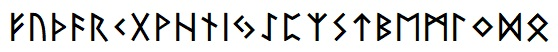
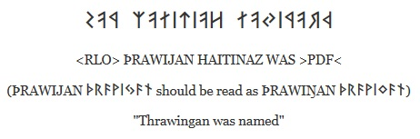

BabelStone Runic Elder Futhark is a Unicode Runic font covering the 24 runes of the Common Germanic fuþark, also known as the Elder Fuþark. Ths font also includes variant forms for most of these runes using unofficial variation sequences.
BabelStone Runic Elder Futhark (24 points)

The tables below render each character using BabelStone Runic Elder Futhark, either using the font installed on your local machine or using WOFF fonts if the font is not installed on your local machine.
Variant glyph forms for most of the runes are accessible as unofficial variation sequences (which do not conform to the Unicode Standard), using VS2 through VS6 (VS1 can be used to explicitly access the default glyph). For example, the rounded variant of 16C3 ᛃ is accessible as <16C3 FE01> (16C3 + VS1).
| Code Point | Character Name | Transcription | Character | Variants | ||
|---|---|---|---|---|---|---|
| VS2 | VS3 | VS4 | ||||
| 16A0 | RUNIC LETTER FEHU FEOH FE F | f | ᚠ |
ᚠ︁ |
||
| 16A2 | RUNIC LETTER URUZ UR U | u | ᚢ |
ᚢ︁ |
ᚢ︂ |
ᚢ︃ |
| 16A6 | RUNIC LETTER THURISAZ THURS THORN | th | ᚦ |
ᚦ︁ |
||
| 16A8 | RUNIC LETTER ANSUZ A | a | ᚨ |
ᚨ︁ |
||
| 16B1 | RUNIC LETTER RAIDO RAD REID R | r | ᚱ |
ᚱ︁ |
||
| 16B2 | RUNIC LETTER KAUNA | k | ᚲ |
ᚲ︁ |
||
| 16B7 | RUNIC LETTER GEBO GYFU G | g | ᚷ |
|||
| 16B9 | RUNIC LETTER WUNJO WYNN W | w | ᚹ |
ᚹ︁ |
||
| 16BA | RUNIC LETTER HAGLAZ H | h | ᚺ |
ᚺ︁ |
ᚺ︂ |
ᚺ︃ |
| 16BE | RUNIC LETTER NAUDIZ NYD NAUD N | n | ᚾ |
|||
| 16C1 | RUNIC LETTER ISAZ IS ISS I | i | ᛁ |
|||
| 16C3 | RUNIC LETTER JERAN J | j | ᛃ |
ᛃ︁ |
ᛃ︂ |
ᛃ︃ |
| 16C7 | RUNIC LETTER IWAZ EOH | ė | ᛇ |
|||
| 16C8 | RUNIC LETTER PERTHO PEORTH P | p | ᛈ |
ᛈ︁ |
ᛈ︂ |
|
| 16C9 | RUNIC LETTER ALGIZ EOLHX | z | ᛉ |
ᛉ︁ |
ᛉ︂ |
ᛉ︃ |
| 16CA | RUNIC LETTER SOWILO S | s | ᛊ |
ᛊ︁ |
ᛊ︂ |
|
| 16CF | RUNIC LETTER TIWAZ TIR TYR T | t | ᛏ |
|||
| 16D2 | RUNIC LETTER BERKANAN BEORC BJARKAN B | ƀ | ᛒ |
ᛒ︁ |
ᛒ︂ |
|
| 16D6 | RUNIC LETTER EHWAZ EH E | e | ᛖ |
ᛖ︁ |
||
| 16D7 | RUNIC LETTER MANNAZ MAN M | m | ᛗ |
ᛗ︁ |
||
| 16DA | RUNIC LETTER LAUKAZ LAGU LOGR L | l | ᛚ |
ᛚ︁ |
||
| 16DC | RUNIC LETTER INGWAZ | ŋ | ᛜ |
ᛜ︁ |
||
| 16DE | RUNIC LETTER DAGAZ DAEG D | đ | ᛞ |
|||
| 16DF | RUNIC LETTER OTHALAN ETHEL O | o | ᛟ |
ᛟ︁ |
||
| 16EB | RUNIC SINGLE PUNCTUATION | ᛫ |
||||
| 16EC | RUNIC MULTIPLE PUNCTUATION | ᛬ |
||||
| 16ED | RUNIC CROSS PUNCTUATION | ᛭ |
||||
The table below lists ZWJ ligatures for bind runes that are currently supported in this font. Additional ligatures will be added on request.
| Ligature | Code Points | Glyph |
|---|---|---|
| A-Z | 16A8 ZWJ 16C9 | ᚨᛉ |
| G-A | 16B7 ZWJ 16A8 | ᚷᚨ |
| H-A | 16BA ZWJ 16A8 | ᚺᚨ |
| H-E | 16BA ZWJ 16D6 | ᚺᛖ |
| I-NG | 16C1 ZWJ 16DC | ᛁᛜ |
| E-R | 16D6 ZWJ 16B1 | ᛖᚱ |
| E-M | 16D6 ZWJ 16D7 | ᛖᛗ |
Runic inscriptions mostly read left-to-right (LTR), but sometimes read right-to-left (RTL) or are sometimes written boustrophedon (left-to-right and right-to-left in alternate lines). Runic text set using BabelStone Elder Futhark can be displayed in right-to-left order with mirrored glyphs by putting U+202D (LEFT-TO-RIGHT OVERRIDE [RLO]) at the start of the text and putting U+202C (POP DIRECTIONAL FORMATTING [PDF]) at the end of the text (PDF is not required at the end of a line, as the directionality of the text is reset at a new line, but for the same reason RLO is required at the start of each line of RTL text). This works as expected in Firefox and Chrome browsers, but in IE11 and Edge browsers the text is reordered from right to left, but the mirrored glyphs are not used.
Drawing of the Kalleby Rune Stone in La Suède préhistorique (1874) by Oscar Montelius
ᚦᚱᚨᚹᛁᛃᚨᚾ ᚺᚨᛁᛏᛁᚾᚨᛉ ᚹᚨᛊ
<RLO> ÞRAWIJAN HAITINAZ WAS >PDF<
(ÞRAWIJAN ᚦᚱᚨᚹᛁᛃᚨᚾ should be read as ÞRAWIŊAN ᚦᚱᚨᚹᛁᛜᚨᚾ)
"Thrawingan was named"
In Firefox the above example is rendered as:

| Script | Language | Features | Explanation |
|---|---|---|---|
| Runic <runr> | Default <dflt> | Glyph Composition Decomposition <ccmp> | For producing ligatured "bind runes". |
| Right-to-Left Mirrored Forms <rtlm> | Mirrored glyphs for right-to-left layout. |
| Version | Date | Notes |
|---|---|---|
| 3.000 | 2018-02-11 | Initial release |
| 3.001 | 2018-02-11 | Added three ligatures and additional variants |
| 3.002 | 2018-02-15 | Minor changes |
| 3.003 | 2018-02-17 | Fix ligatures; remove mirrored variants; add OpenType right-to-left mirrored forms. |
| 3.004 | 2018-02-18 | Add more ligatures |
BabelStone Runic Elder Futhark is licensed under the SIL Open Font License 1.1, which means you are free to use it for personal or commercial purposes, and to redistribute it by itself or as part of a free or commercial software package, just as long as you do not sell the font on its own. The license also allows you to modify the font in any way you like, as long as the modified font does not use "BabelStone" in its name. Please read the license for details.
A WOFF format web font version of BabelStone Runic Elder Futhark is available here. You are free to download and host the web font on your own web site, but you may not dynamically use the woff font on www.babelstone.co.uk from your web site.
BabelStone Runic | BabelStone Younger Futhark Runes | BabelStone Runic Staveless | BabelStone Runic Dotted | BabelStone Anglo-Saxon Runes | BabelStone Moon Runes
{kind=link}